Serie X · 1200 GPD
Waterdrop X12
- 1200 GPD
- 11 etapas
- pH 7.5
- Grifo inteligente
Instalación, garantía y soporte de Nasfeco
Distribuidor exclusivo oficialWaterdrop Filter en Ecuador
Instalación profesionalQuito, Guayaquil, Cuenca y Loja
Garantía localRespaldo de Nasfeco S.A.
Trabajamos en todo el EcuadorAsesoría por WhatsApp
Documentos oficiales
Distribuidor exclusivo oficial · Waterdrop Filter
Precios finales en dólares: incluyen IVA e instalación. Trabajamos en todo el Ecuador, con instalación en Quito, Guayaquil, Cuenca y Loja.
Instalación, garantía y soporte de Nasfeco
Instalación, garantía y soporte de Nasfeco
Instalación, garantía y soporte de Nasfeco
Cuatro equipos para cada forma de vivir. Si no estás seguro, te asesoramos sin costo.
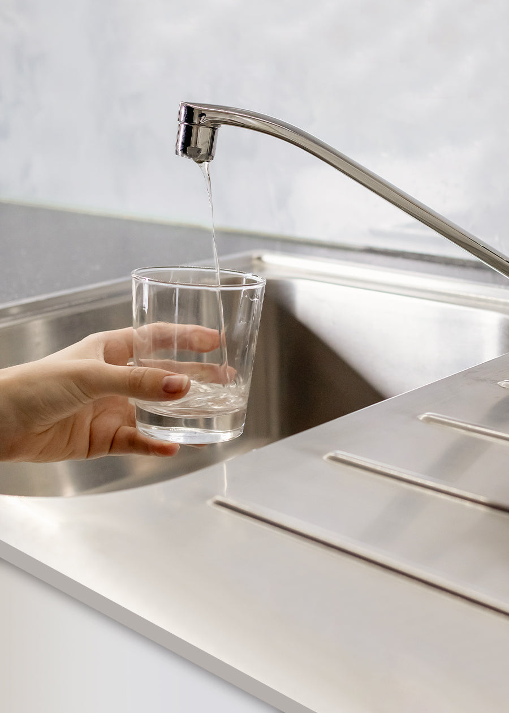
Purificadores con tanque que se vacían justo cuando estás cocinando.
El agua de la red llega segura, pero con cloro, sarro y un sabor que no provoca.
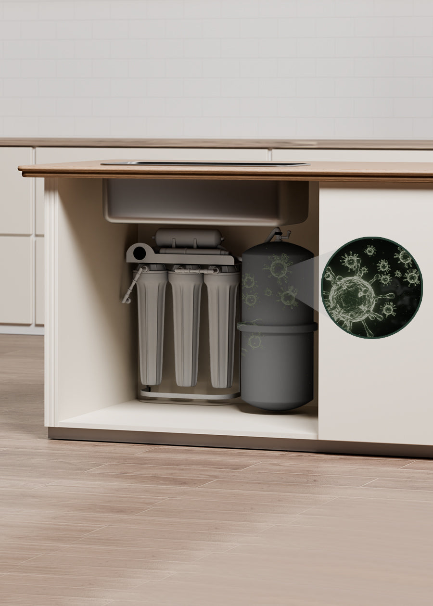
El agua quieta en un tanque bajo el fregadero no es la mejor idea.
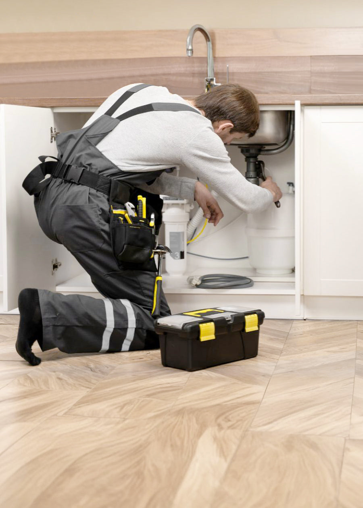
Visitas, perforaciones y mangueras por todos lados antes del primer vaso.
Haz la cuenta en 10 segundos y compara lo que gastas hoy con lo que cuesta tener agua pura en tu propia cocina.
Ajusta los valores a lo que compras normalmente.
Cálculo referencial. No incluye el costo de los filtros de repuesto, que dependen del modelo y del consumo.
El agua pasa directo por los filtros y sale lista para tomar: una taza en 2 a 3 segundos.
Tiempos aproximados con la Waterdrop X12 de 1200 galones por día
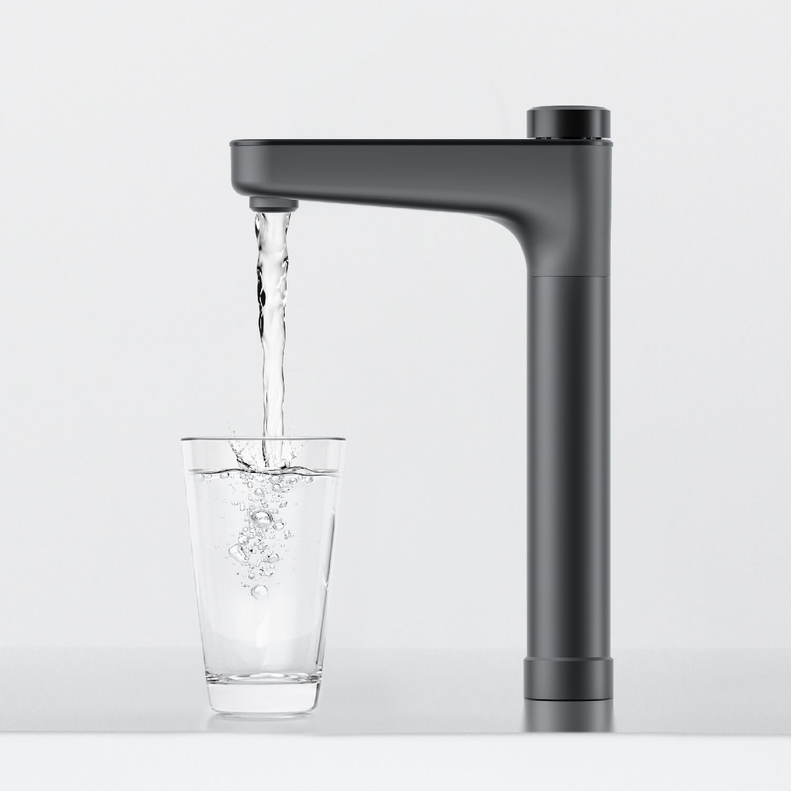
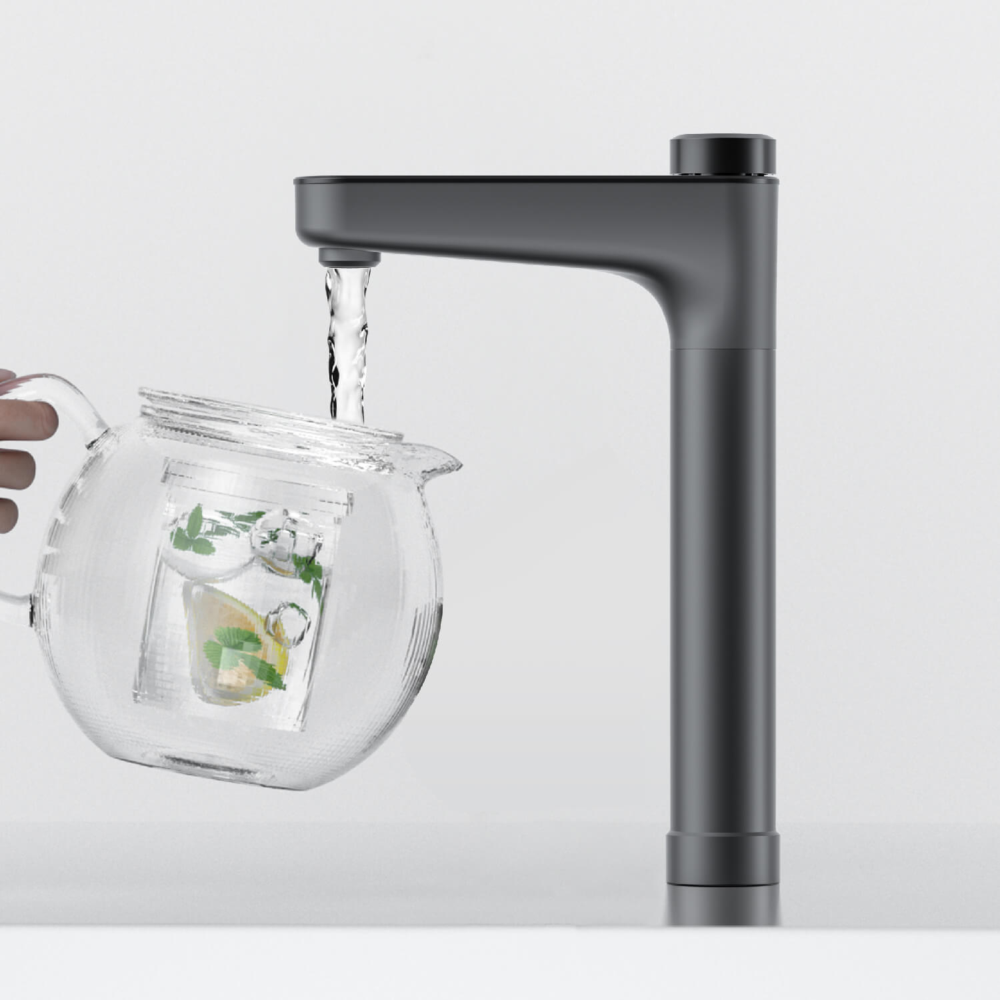
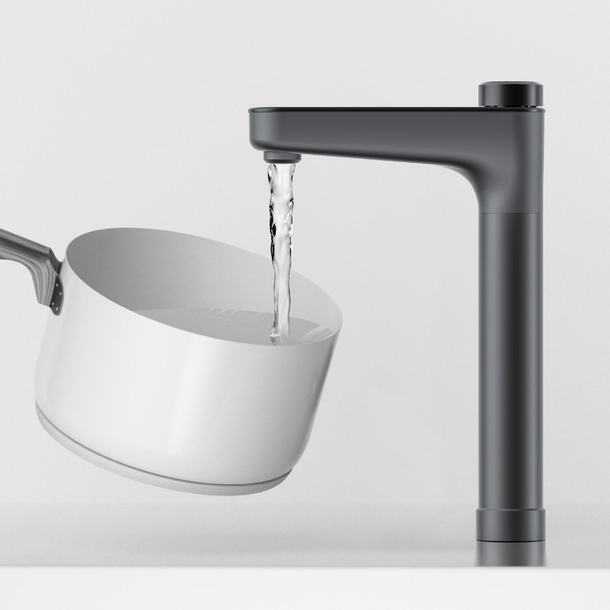
Toca los puntos para ver qué purificador va en cada lugar.
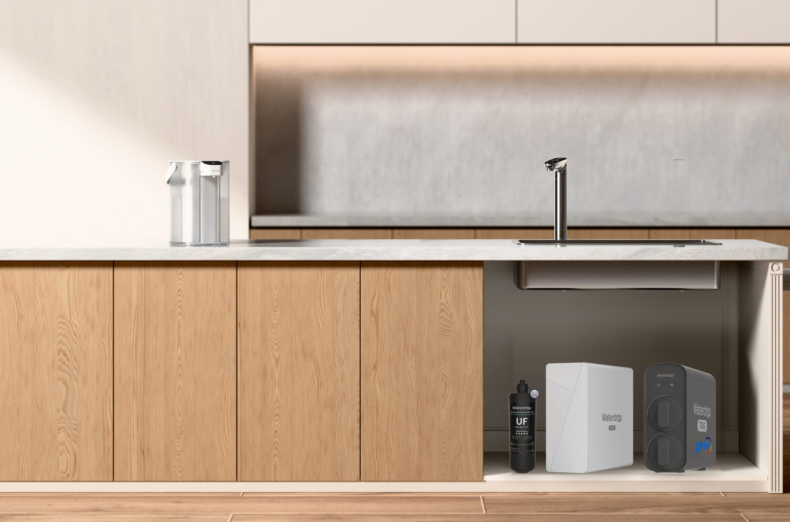
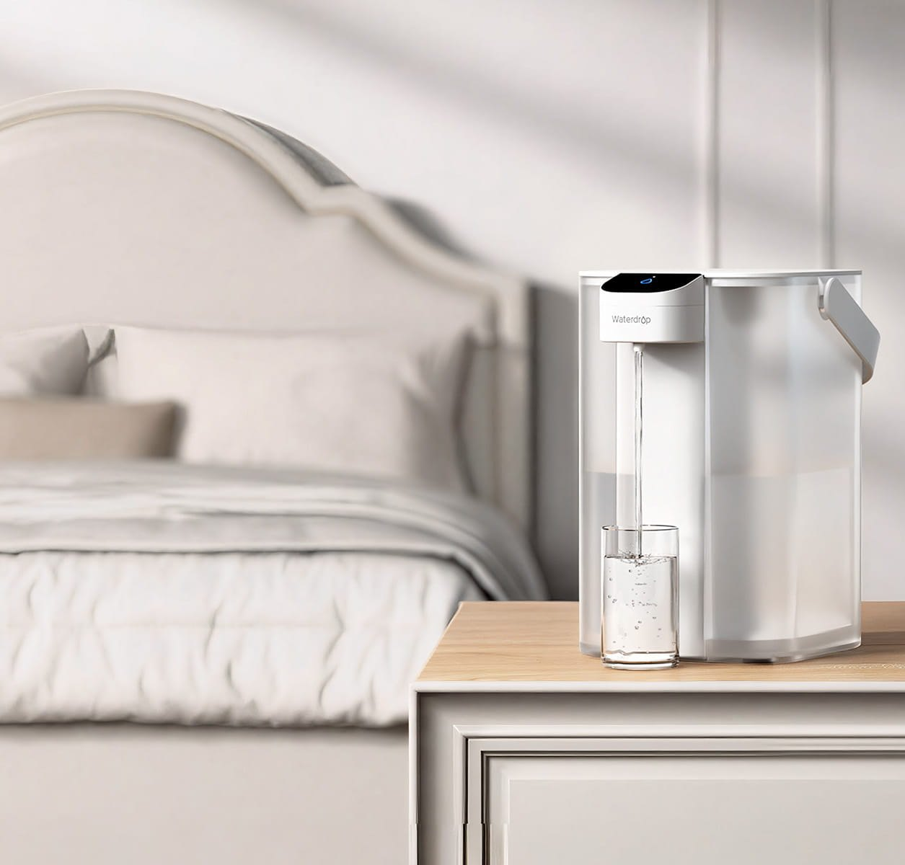
Todos quitan el cloro y el mal sabor. Cambia cuánto purifican, dónde van y si necesitan instalación.
Del grifo a tu vaso en segundos. Así se vive con un purificador Waterdrop en casa.
Servicio Nasfeco
Como distribuidor exclusivo oficial de Waterdrop Filter en Ecuador, Nasfeco se encarga de que tu equipo funcione en casa durante años.
Nos cuentas cómo es tu casa y tu consumo, y te recomendamos el equipo que realmente necesitas. Sin compromiso.
Técnicos de Nasfeco instalan el equipo en Quito, Guayaquil, Cuenca y Loja, revisan conexiones y te enseñan a usarlo.
Llevamos registro de tu equipo y te escribimos por WhatsApp cuando se acerca el cambio. Repuestos originales en stock.
Si algo pasa, hablas con una empresa ecuatoriana, no con un call center en otro país. Garantía gestionada por Nasfeco.

Instalación
La Serie X se conecta a la toma de agua fría del fregadero. Nuestros técnicos la dejan funcionando en una visita y, si estás en otra ciudad, te acompañamos por WhatsApp para que la instales tú mismo con la guía incluida.
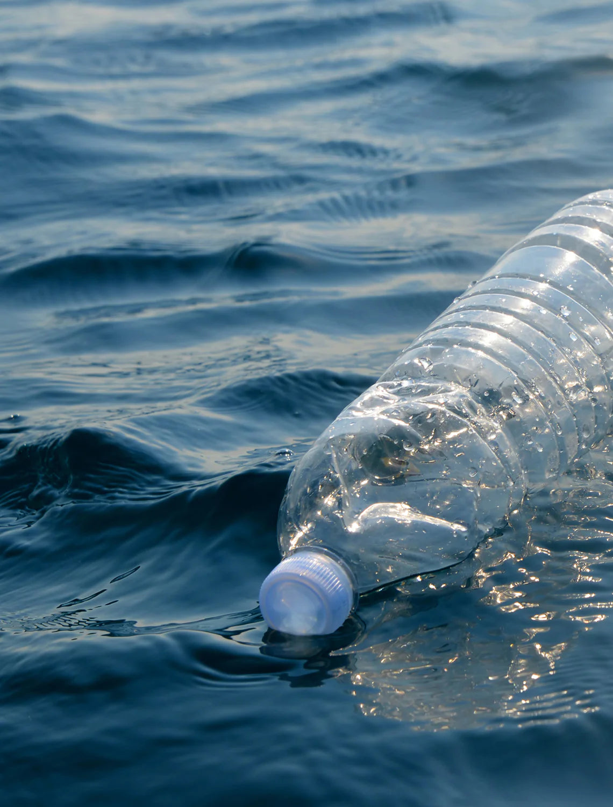
SostenibilidadUna familia que deja los botellones evita cientos de envases de plástico al año.
Calcula tu impactoQue cada familia ecuatoriana tome agua pura sin depender de botellones, con tecnología certificada y soporte local.
Ver purificadoresNasfeco, la empresa detrás de Waterdrop Ecuador, también lleva soluciones de agua y energía solar a negocios e industrias.
Conocer Nasfeco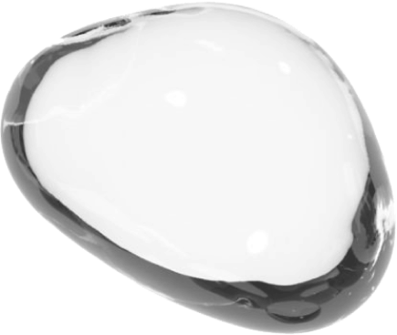
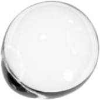
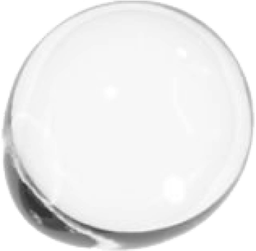
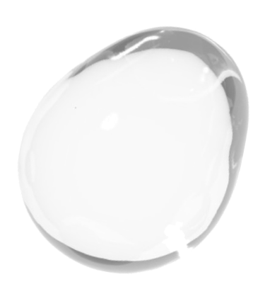
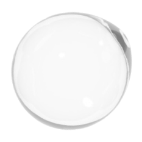
¿No sabes qué purificador va con tu casa? Responde 3 preguntas y te recomendamos uno en menos de un minuto.
Para empresas
Nasfeco también diseña soluciones de agua y energía para negocios: varios puntos de agua purificada, mantenimiento programado y facturación para tu empresa.
Lo que más nos preguntan antes de comprar. Si tu duda no está aquí, escríbenos por WhatsApp y te respondemos.
ContáctanosEl agua de la red llega potabilizada, pero en el camino puede recoger sedimentos y sarro de las tuberías, y lleva cloro, que se nota en el sabor. Un purificador elimina todo eso.
Sí. Nasfeco es el distribuidor exclusivo oficial de Waterdrop Filter en Ecuador. Vendemos equipos originales con garantía, repuestos y soporte técnico local.
Si quieres la máxima pureza y caudal, elige la Waterdrop X12. Si buscas ósmosis inversa con minerales alcalinos a mejor precio, la G5P700A. Si tu agua de red es de buena calidad y prefieres algo sin electricidad, la Ultrafiltración UF es ideal. Si vives en departamento o arriendo y no quieres instalar nada, el Dispensador ED01 es perfecto.
Sí. Trabajamos en todo el Ecuador. En Quito, Guayaquil, Cuenca y Loja coordinamos la instalación con nuestros técnicos; en otras ciudades te acompañamos por WhatsApp.
El precio que ves es el precio final, sin costos adicionales. En la X12, la G5P700A y la Ultrafiltración UF incluye todo: IVA e instalación. El Dispensador ED01 no necesita instalación; su precio incluye IVA y el envío se cotiza aparte.
Agrega tus productos al carrito y finaliza el pedido por WhatsApp. Un asesor confirma disponibilidad y te indica las formas de pago.
Los códigos se incluyen automáticamente en tu pedido de WhatsApp. El descuento es válido hasta que termine la cuenta regresiva.
Depende del modelo y de tu consumo. Todos los equipos te avisan cuándo cambiarlos y Nasfeco mantiene repuestos originales en stock.
Nasfeco S.A. La gestionamos aquí en Ecuador: si algo falla, nos escribes y lo resolvemos sin que tengas que tratar con el exterior.
Asesoría gratuita
Cuéntanos cuántos son en casa y dónde viven. Un asesor de Nasfeco te recomienda el equipo ideal y coordina la instalación contigo.